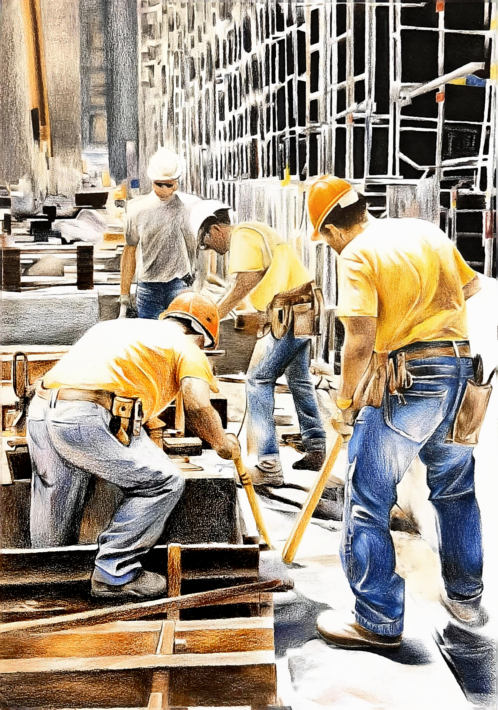
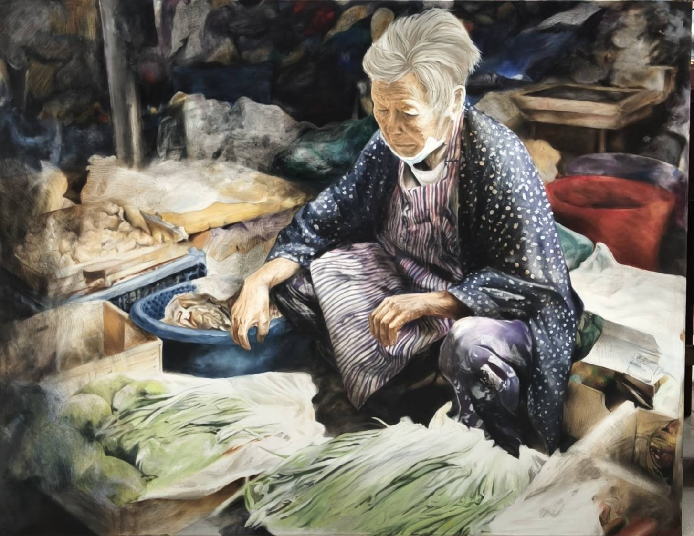
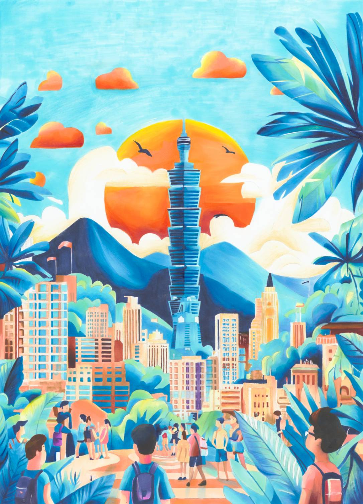
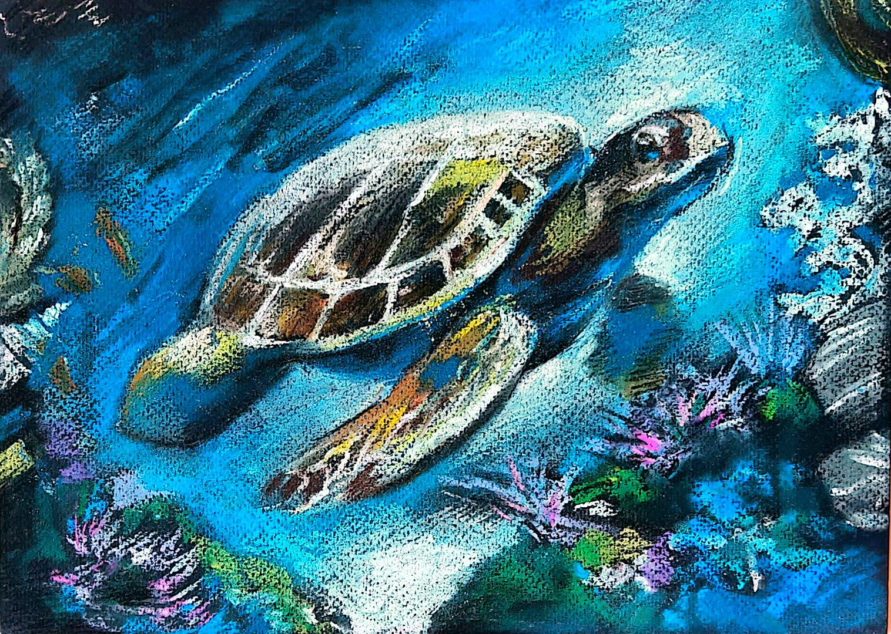
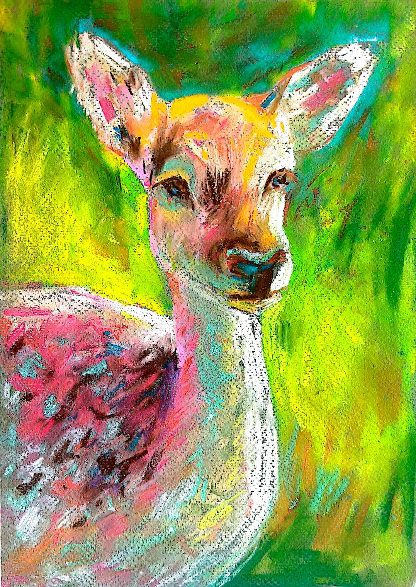
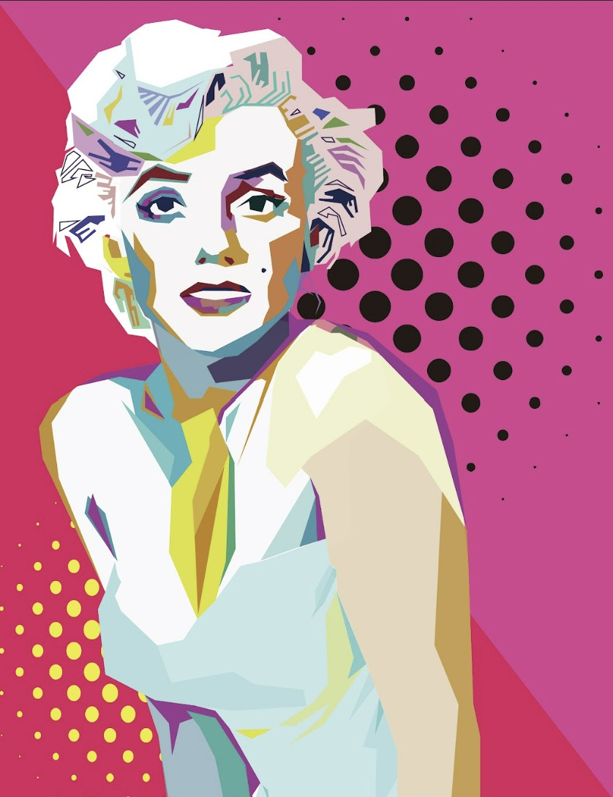
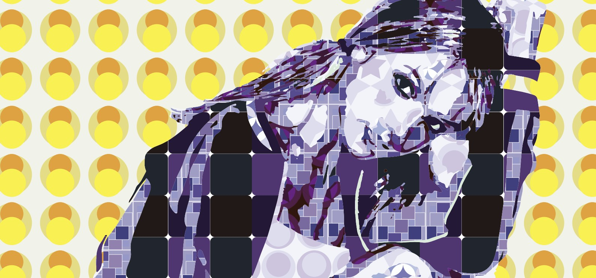
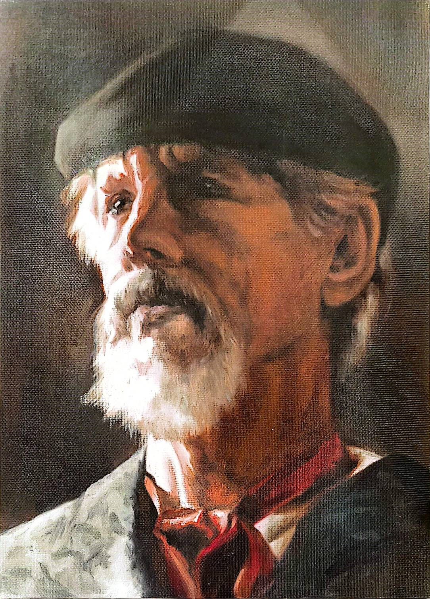
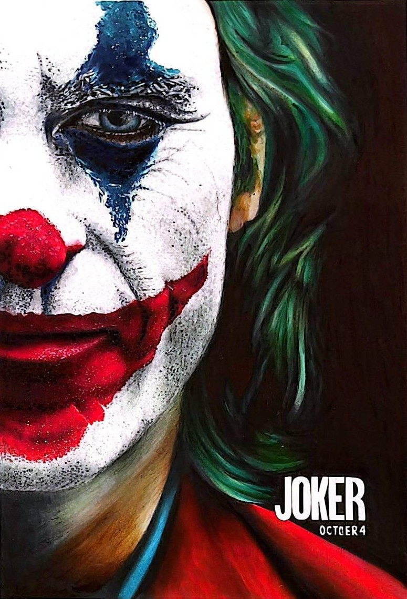
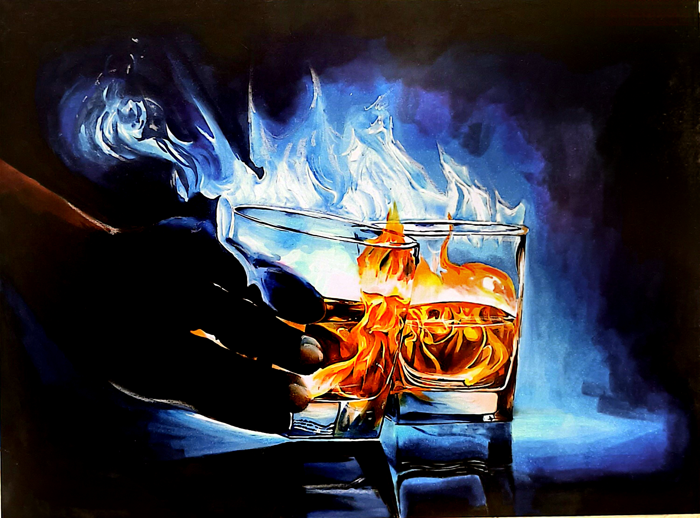

許 雅湘
台北市⽂⼭區⽊柵路111號 · 0912-345-678 ·
a115080088@mail.shu.edu.tw
您好！我是許雅湘，⽬前就讀於世新⼤學數位媒體系。這堂課對我來說不只是學習網頁設計，也是一次探索與互動的經驗。
希望再慢慢完成這個網頁的過程中，也能留下些屬於自己的回憶與足跡！
專題初期使用 Illustrator 繪製約400頁App畫面，隨著架構擴增導致跨頁修改效率受限。後期主導將專案遷移至Figma，並重新建構 UI 組件與系統化規範，有效提升團隊後續維護與迭代修改的效率。
挑戰將城市地標與市井動態融入繪畫，透過麥克筆細緻疊色傳達繁華都市裡的溫度感
跨出二維設計舒適圈，自主摸索 3D 建模工具；於短時間內建構工業螺栓細節與曲面造型，完成了從平面視覺到三維布線與倒角邏輯的跨領域嘗試
考取「視覺傳達設計」與「印前製程-圖文組版 PC」丙級證照，具備扎實的文字造型、色彩學、軟體操作與印刷落版實務能力
我的個人興趣相當多元，平時喜歡繪畫、素描，也對音樂抱有興趣，平常會接觸鋼琴、電吉他等樂器。此外，我也喜歡動漫與漫畫，享受欣賞不同作品的樂趣。
除了藝術與娛樂，我也喜歡游泳、健身，近期更開始接觸弓道，嘗試不同的活動與技能。我樂於探索新的事物，也享受培養興趣的過程，讓日常生活更加豐富。

刻劃烈日下與鋼筋水泥為伴的勞動身影，致敬城市建造者的堅韌精神

溫柔捕捉長者在樸實屋室內細緻編織的日常，細訴光陰與傳統的故事

以絢麗多姿的彩繪風格與綠意裝點，翻玩展現現代地標與大自然的生命力

細膩描摹巨型海龜悠游於斑斕珊瑚礁間，展現海洋深邃而寧靜的生態之美

在色彩斑斕的抽象筆觸中，勾勒出林間小鹿專注而溫柔的野性神態

融合普普藝術風格與鮮明網點，重新詮釋經典偶像的迷人風采與時代魅力

在強烈幾何圖紋與黃黑對比中，探索人物肖像與空間交織的抽象情感

運用古典油畫質感與深刻的光影，捕捉歷經風霜的長者專注而沉靜的靈魂

以強烈色彩與戲劇性妝容，深刻詮釋內心掙扎與矛盾的經典影視角色

在深邃夜色中釋放耀眼絢麗的光芒，紀錄演藝舞台上如夢似幻的沸騰瞬間